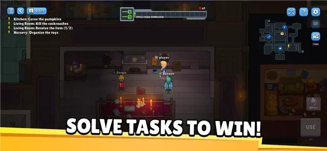
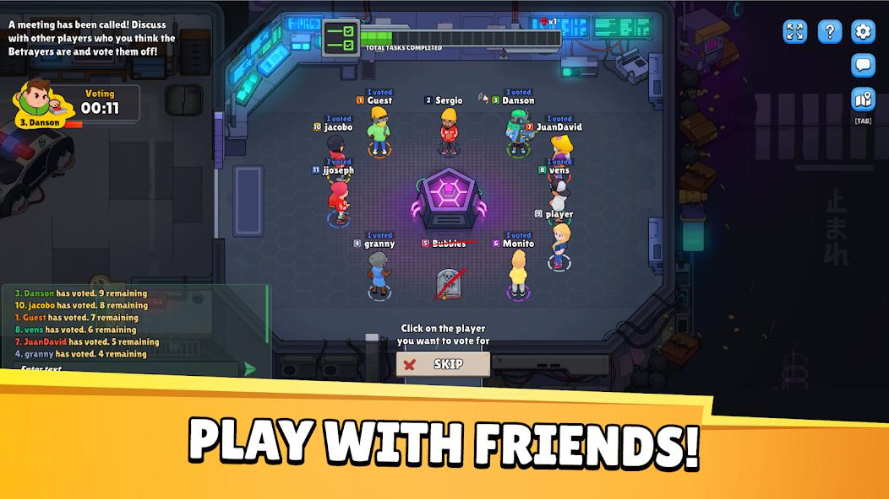
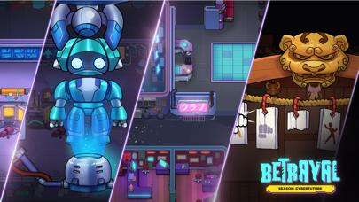

Introduction
Betrayal.io is a free-to-play multiplayer social deduction browser game developed by End Game Interactive, inspired by classics like Among Us, Werewolf, and Town of Salem. In each match, 6 to 12 players are assigned secret roles — Crewmates who must complete tasks and identify the impostors, or Betrayers who sabotage, eliminate, and deceive their way to victory. What sets Betrayal.io apart from other deduction games is its additional unique roles like the Sheriff (who can eliminate suspected betrayers at personal risk) and the Jester (who tries to get themselves voted out). Combined with multiple maps, cross-platform play, built-in voice chat, and a vibrant customization system, Betrayal.io delivers fast-paced rounds full of tension, humor, and strategic depth — all playable directly in your browser with no downloads required.
Getting Started

Controls: Use WASD or Arrow Keys to move, Mouse to click on tasks or interact with objects, E or Spacebar to use/interact with tasks and objects, R to report a dead body, Enter to open chat, Esc to close menus, Tab to open the map, M to open settings.
Game Flow: Each round begins with players joining a lobby (quick match or private room). The system randomly assigns roles — most players become Crewmates, while 1-3 players become Betrayers depending on lobby size. Additional special roles like Sheriff and Jester may also appear. Crewmates receive a task list, while Betrayers get sabotage and elimination abilities.
Victory Conditions: Crewmates win by completing all tasks OR voting out all Betrayers. Betrayers win when their numbers equal or exceed the remaining Crewmates, OR when a critical sabotage goes unresolved. Understanding these win conditions is essential for developing the right strategy from the very first second.
Maps: The game features multiple unique maps including the Spaceship (classic sci-fi setting with corridors and reactor rooms), the Haunted Mansion (multi-level spooky environment with hidden passages), and the Fishing Lobby (a relaxed hub area with side quests). Each map has different task layouts, vent locations, and visual obstacles that affect strategy.
Basic Tips
1. Always Do Your Tasks as a Crewmate: The task bar at the top of the screen tracks crew progress. Completing tasks is the fastest path to victory and simultaneously proves your innocence. Focus on tasks in high-traffic areas where other players can see you working — this creates witnesses who will vouch for you during meetings.
2. Use the Buddy System: As a crewmate, travel in pairs or small groups. Betrayers are far less likely to strike when there are witnesses. However, don't follow the same person everywhere — if they are a betrayer, you will both die. Rotate partners and observe who consistently has alibis versus who is always alone.
3. Master the Meeting Phase: When a body is reported or an emergency meeting is called, everyone discusses and vote. Speak early with factual observations — "I saw Player X near the reactor when the lights went out" is far more credible than "I feel like Player X is sus." Listen carefully to what others say and look for contradictions in their timelines.
4. Betrayer: Fake Your Tasks Convincingly: Stand at task locations long enough for others to notice you, then move on. Do not get greedy with kills — eliminate one target, then lay low and pretend to complete tasks. Use the vent system to quickly escape crime scenes, but be aware that watching a player enter a vent is instant proof of guilt.
5. Sabotage Smart: As a betrayer, use sabotages (power outage, oxygen depletion, reactor meltdown) to create chaos and separate crewmates. The best sabotages force players to move alone to fix them — creating isolated kill opportunities. Time your sabotage-kill combos carefully: trigger a distraction, wait for players to split up, then strike.
Advanced Strategies

The Self-Report Gambit (Betrayer): After eliminating a target, immediately report the body yourself. This gives you narrative control — you can frame the story, suggest suspects, and appear helpful. The risk is that observant players may notice you were the last person near the victim. Use this tactic sparingly and pair it with a believable alibi.
Task Camera Awareness (Crewmate): Some tasks in Betrayal.io have visual animations that only crewmates can perform correctly. If you see a player at a task location but nothing happens on the task panel, they are faking. Memorize which tasks have visual indicators and use this knowledge during meetings as hard evidence.
The Double Bluff (Betrayer): When accused, instead of denying everything, partially agree with a smaller accusation to seem honest. "Yes, I was near the reactor, but I was fixing the wires — look at the task log." This builds credibility and redirects suspicion to someone else. The key is showing just enough vulnerability to appear trustworthy.
Sheriff Role Strategy: The Sheriff can eliminate a suspected betrayer, but if they are wrong, the Sheriff dies instead. This creates massive pressure. Only use the Sheriff ability when you have strong evidence — either catching someone in a vent, or having multiple witness accounts placing a suspect at multiple kill scenes. A wrong Sheriff shot is devastating for the crew.
Jester Mind Games: The Jester wins by getting voted out, not by actual betrayal. Play the Jester by acting suspicious without being obviously fake. Drop hints that you know things you shouldn't, hover near vents without entering them, and leave tasks incomplete. The challenge is making yourself look guilty enough to be voted out without being so obvious that players realize you are the Jester and skip you.
Pro Tips

Vent Network Mastery: Each map has a network of connected vents. As a betrayer, learn which vents connect to which locations. The best escape routes lead away from where bodies are likely to be found. Never use the same vent twice in a round — savvy crewmates will camp vent exits after a kill.
Camera and Admin Table Intel: Some maps have security cameras and admin tables that show player locations. As a crewmate, check cameras regularly and report what you see. As a betrayer, disable cameras before committing kills or avoid camera-heavy corridors entirely. The admin table can show room occupancy — use it to find isolated targets or verify alibis.
The Phantom Walk: As a betrayer, walk confidently through groups of players without stopping. Moving with purpose makes you look like a crewmate heading to a task. Stopping near players or hovering in doorways creates suspicion. Practice moving through the map with the same confidence as someone who knows exactly where their next task is.
Chat Manipulation: In the discussion phase, the order you speak matters. Betrayers should speak first to set the narrative before others form opinions. Use phrases like "I just came from [location] and everything was fine" to establish an alibi. If accused, ask specific questions — "Who saw me? When exactly? What was I wearing?" — forcing accusers to provide concrete evidence rather than vague suspicion.
Customization for Identification: Use the skin and hat system to make yourself visually distinctive. This helps crewmates remember who you are and track your movement. As a betrayer, choose common-looking outfits to blend in. Experienced players use color-coding — always picking the same color to build recognition in recurring lobbies.
FAQ
Is Betrayal.io free to play? Yes, Betrayal.io is completely free to play in your browser. The game supports optional cosmetic purchases (skins, hats, pets) but all gameplay is fully accessible without spending money.
How many players are in each match? Matches support 6 to 12 players. Smaller lobbies have fewer betrayers and shorter rounds, while larger lobbies create more complex social dynamics and longer games.
Can I play with friends? Yes! You can create private rooms and share the code with friends. Alternatively, use Quick Match to join random public lobbies. The game supports cross-platform play between browser, iOS, and Android.
What are the different roles? The main roles are Crewmate (complete tasks, vote out betrayers), Betrayer (eliminate crewmates, sabotage systems), Sheriff (can eliminate suspected betrayers but dies if wrong), and Jester (wins by getting voted out). Each role adds a unique strategic layer to the game.
How do I report a body? Walk near a dead body and press R or click the Report button. This triggers an emergency meeting where all surviving players discuss and vote. You can also call emergency meetings using the emergency button on certain map locations.
Does Betrayal.io have voice chat? Yes, the game features built-in voice chat alongside text chat. This makes discussions more dynamic and allows for real-time persuasion during meetings. You can also use external voice apps like Discord alongside the game.
Conclusion
Betrayal.io is a masterclass in social deduction gameplay that rewards both analytical thinking and persuasive communication. As a crewmate, focus on task efficiency, group movement, and evidence-based voting. As a betrayer, master the art of deception through convincing task-faking, strategic sabotage timing, and narrative control during meetings. Remember that every round is different — adapt your strategy based on lobby size, map layout, and the behavior patterns of your fellow players. Whether you are a seasoned Among Us veteran or new to social deduction games, Betrayal.io offers a fresh, accessible, and endlessly entertaining experience. Gather your friends, jump into a lobby, and may the best deceiver win!